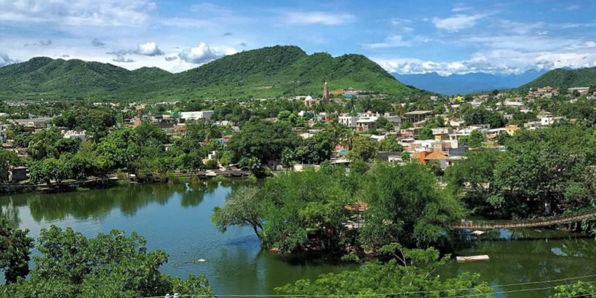
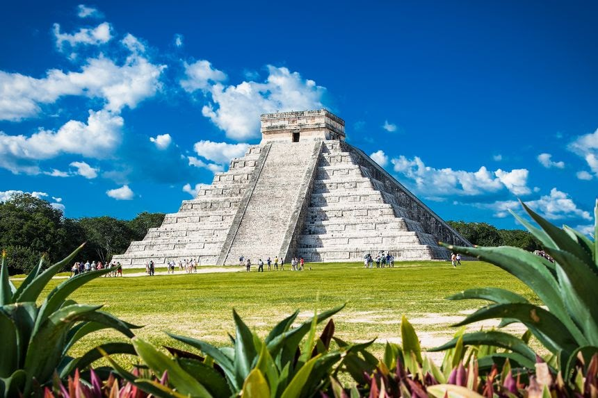

Les meilleurs endroits pour un séjour agréable à El Rosario
El Rosario est une ville de la commune de Francisco I. Madero. Selon la classification de Koppen-Geiger,
elle possède un
climat équatorial (AF) humide avec 104 mm de pluie sur 1 jour en période la plus favorable de l’année.
Février est le
meilleur mois pour visiter El Rosario, l’humidité et la chaleur au cours du mois procurent un certain
inconfort. Les
mois envisageables sont : Janvier, mars, Avril, Mai et durant la période d' Octobre à Décembre.
Les endroits historiques à visiter en El Rosario
El Rosario offre un paysage très varié dont près de 1.000 orchidées et environ 10.000 espèces
d’oiseaux abritent sa
réserve, qui est un lieu de migration des 100
millions de papillons Mariposas Monarcas en mois d’Octobre
.
De même, nous pouvons contempler de nombreux bâtiments et monuments datant de l’époque coloniale
qui sont désormais
classés au patrimoine mondial de l’humanité. Entre autres on a : Tulum, Les cenotes et Chichen
Itza.

Chichen Itza
Un site archéologique classé parmi les sept merveilles du monde. C’est un héritage culturel
mayas qui est omniprésent.
Il abrite principalement le temple dédié au dieu du lieu : le Kukulkan,
l’esplanade du juego de
pelota (jeu de balle),
l'observatoire, et plus. Une fois présent, l’ambiance de l'époque ancient Mayas où les animaux
sauvages et les hommes
cohabitent, appareil comme un rêve. Chaque jour, les touristes du monde se donnent rendez-vous
dans ce coin du Yucatan,
et c’est notamment pendant les équinoxes d’automne et de printemps que l’afflux est le plus
grand. En ces jours et de
façon naturelle, la position du soleil produit un jeu de lumières et d’ombre qui fait apparaître
la silhouette d’un
serpent à plume des deux côtés de la pyramide. Ceci représente la descente du dieu
Kukulcan sur
terre.
Ce qu'il nous faut pour un séjour parfait
Pour se rendre à El Rosario : Il y a 8 façons selon l’agence Rome2rio de se rendre à El
Rosario en
avion, bus ou
voiture. La meilleure et la plus rapide est le départ de l'aéroport Mexico à l'aéroport Tijuana, le vol
le plus rapide
et direct qui dure 3h 32m. Il n’existe pas de services de bus direct depuis Mexico à El Rosario mais des
services bus
qui opèrent par ABC jusqu’à la station El Rosario.
Pour notre hébergement :ViaMichelin se
classe parmi les meilleurs services immobiliers
sur place. Elle nous propose 8 hébergements pour El
Rosario dont la réservation est rapide
et totalement gratuite. A partir de 25 €, nous pouvons avoir les réservations d'hébergement à El
Rosario. Les hôtels
situés au plus proche du centre ville sont : Hôtel j y j rent a car, Hôtel Rancho Argueta, Quality Hotel
Real Aeropuerto
San Salvador avec la possibilité d’afficher l'ensemble des hébergements sur la carte El Rosario afin de
faire un
meilleur choix.
Pour notre restauration : À El Rosario nous pouvons trouver un ensemble de
restaurations, Maman espinoza, le meilleur de Baja, restaurant Sinahi,
restaurant mexicain dans fraccionamiento El Rosario que nous pouvons retrouver sur la TRITTY
dont la
base de données est
accessible à exporter pendant un mois.